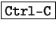

El comando test se utiliza cuando se itera con el comando while. En este comando es muy útil la comparación de valores.
test puede comparar números al igual que cadenas de caracteres.
while [ ${CANT_USUARIOS} -le 1 ]
do
echo Todavia no hay suficientes jugadores
sleep 1
done
echo Ahora hay más de 1 usuario
Este ejemplo compara la variable CANT_USUARIOS si es menor o igual (-le significa less or equal en inglés) a uno, de ser así, repite cada 1 segundo, «Todavía no hay suficientes jugadores» en cuanto la cantidad de usuarios sea mayor a 1 sale del ciclo.
También es posible hacer un ciclo infinito utilizando test (o bien llamado [) para que devuelva siempre verdadero (con [ 1 ]). Se recomienda usar el comando true que devuelve un código de salida exitoso (cero) y el while no termina a menos que se le envíe una señal con .
while true do clear mailq sleep 2 done
Este simple algoritmo muestra el contenido de la «bandeja de salida» del sendmail cada 2 segundos. Vemos que con pocos conocimientos en bash se pueden lograr infinidad de cosas.